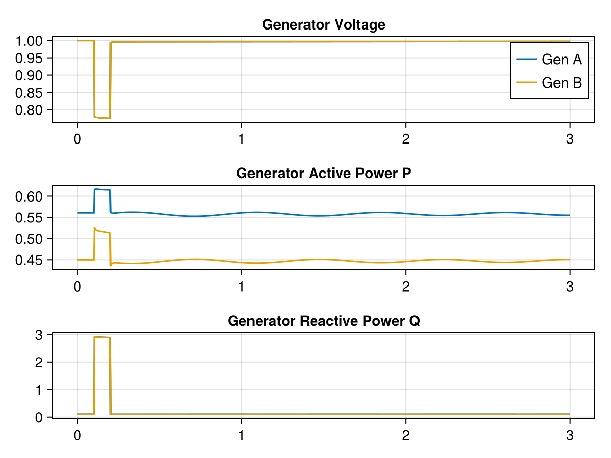

On Voltage and Current Sources
This document covers important concepts relating to the interplay between ModelingToolkit and NetworkDynamics.jl. Make sure to read the PowerDynamics docs on Modeling Concepts first. Also check out the NetworkDynamics.jl docs on the Mathematical Model, which covers in detail what is only recapped briefly here.
Since handling large symbolic models can be computationally intensive, the core idea of this library is to maintain a clear separation between acausal symbolic models for individual components (generators, loads, RES, ...) and the interconnection of said components for network simulation. The symbolic models are simplified and compiled into VertexModel and EdgeModel objects. These models have a clear input-output structure related to the interconnection of potentials and flows on the network. Namely:
VertexModelssit at the buses. As input, they see the summed current from all connected lines. Their job is to establish a voltage at that point.EdgeModelssit on the edges. As input, they see the voltages on both ends. Their job is to establish the current flow on that line.
more edges
△
n ⋯───╮ ╭────────────────┼────────────────╮ ╭───⋯ n
e │ │ voltage │ u out │ │ e
x ┏━━▽━━━━━━━━━━━━━▽━━┓ ╔═════════△═════════╗ ┏━━▽━━━━━━━━━━━━━▽━━┓ x
t ┃ EdgeModel ┃ ║ VertexModel ║ ┃ EdgeModel ┃ t
┃ ẋ = f(x, u, p, t) ┃ ║ ẋ = f(x, i, p, t) ║ ┃ ẋ = f(x, u, p, t) ┃
n ┃ i = g(x, u, p, t) ┃ ║ u = g(x, p, t) ║ ┃ Φ = g(x, u, p, t) ┃ n
o ┗━━▽━━━━━━━━━━━━━▽━━┛ ╚═════════△═════════╝ ┗━━▽━━━━━━━━━━━━━▽━━┛ o
d │ current │ i out ╭─┴─╮ current │ i out │ d
e ⋯───╯ ╰──────────────▷ + ◁──────────────╯ ╰───⋯ e
╰─△─╯
│
more edgesSo at its core, a VertexModel must act like a voltage source (we'll come to the exception shortly), while EdgeModels must act like a current source.
You might ask: what happens when that is not the case? For example, a typical generator model might be described as a voltage source behind a stator resistance/reactance.
u_device Impedance u_bus
●──────████──→───●──←───
│ i_device i_grid
voltage source (↗)
│
│
⏚The device current through the impedance depends on the bus voltage:
\[ i_{\mathrm{device}} = Y(u_{\mathrm{device}} - u_{\mathrm{bus}})\]
This looks like a system with voltage as the natural input and current as the output – a current source, not a voltage source. However, we can use Kirchhoff's Current Law (KCL) to reformulate this as an implicit output equation for the bus voltage:
\[\begin{align} \tag{1a}i_{\mathrm{device}} &= Y(u_{\mathrm{device}} - u_{\mathrm{bus}})\\ \tag{1b}0 &= i_{\mathrm{device}} - i_{\mathrm{grid}} \end{align}\]
The second equation here is an implicit constraint equation for $u_{\mathrm{bus}}$: once you substitute (1a) in (1b)
\[ 0 = Y(u_{\mathrm{device}} - u_{\mathrm{bus}}) - i_{\mathrm{grid}}\]
it becomes clear that it is possible to fulfill the constraint by tweaking $u_{\mathrm{bus}}$. The key is that $i_{\mathrm{device}}$ algebraically depends on $u_{\mathrm{bus}}$. This kind of modeling is quite typical for power grid simulations. It directly extends to the case where you have multiple injectors at a bus; there are just more current terms in the KCL.
However, two practical problems arise from merging all devices connected to a bus into a single VertexModel and using KCL as an output constraint:
- Large Models: Some simulations involve large aggregated models – e.g. lots of generators with controller dynamics connected to a single bus. This can lead to bus models with hundreds of states and long compilation times.
- EMT Models: In EMT modeling, currents mostly become differential states. These must not be coupled using algebraic KCL.
Problem 1 can be solved using special Current Injector Buses described at the end of this document. Problem 2 is slightly more fundamental and will be addressed in detail first.
Challenges of EMT Models
In EMT-style modeling, everything looks a bit different. Suddenly, both voltages and currents are governed by differential equations. Consider the voltage-source-behind-impedance model again:
\[\begin{align} \tag{2a}\frac{\mathrm{d}i_{\mathrm{device}}}{\mathrm{d}t} &= f_Y(u_{\mathrm{bus}})\\ \tag{2b}0 &= i_{\mathrm{device}} - i_{\mathrm{grid}} \end{align}\]
This time, we have a differential equation for our device current. Therefore, we cannot substitute (2a) in (2b) anymore and the constraint cannot be solved for $u_{\mathrm{bus}}$. But wait, in practice we often have static line models. Static line models have a direct feedforward path from input voltage to output current, i.e. the grid current
\[\begin{equation}\tag{3} i_{\mathrm{grid}} = \sum_\mathrm{connected} i_\mathrm{line} = f(u_\mathrm{bus}, \dots) \end{equation}\]
is the sum over the currents of all connected lines, i.e. an algebraic equation that depends on $u_\mathrm{bus}$ directly.
Therefore, in a closed-loop setting with algebraic lines, we can substitute (3) in (2b) and get
\[ 0 = i_{\mathrm{device}} - \sum_\mathrm{connected} i_\mathrm{line} = f(u_\mathrm{bus}, \dots)\]
which is solvable for $u_\mathrm{bus}$ again. Therefore, differential current output of a vertex is no problem after all if the network happens to be algebraic.
Sometimes compile_bus/VertexModel constructors will fail for such systems with errors referencing "singular system", "input derivative necessary" or "too many highest order equations". This is because at compile time it is not safe to assume algebraic feedback from the network. Use the assume_io_coupling=true keyword to inform MTK about the direct feedback relation $i_{\mathrm{grid}} = f(u_{\mathrm{bus}})$, which should solve most of the problems.
But what happens if you use dynamic line models too? In a dynamic RL line, the current on the line itself is a differential state. Now, solving the KCL becomes impossible – there is no possible substitution such that $u_{\mathrm{bus}}$ appears in (2b). From a mathematical standpoint, we have created a higher-index DAE.
Another way of thinking about this is that we have two differential equations completely defining $i_{\mathrm{grid}}$ and $i_{\mathrm{device}}$ over time. But physically, it is the same current. It is not possible to force the outputs of two independent differential equations to align.
There are two ways to resolve this:
- Replace the algebraic voltage state by a differential state.
- Introduce some algebraic current which directly depends on the voltage into the KCL again.
The first solution is to add a capacitance at the bus:
\[\begin{aligned} \frac{\mathrm{d}i_{\mathrm{device}}}{\mathrm{d}t} &= f_Y(u_{\mathrm{bus}}) \\ C\,\frac{\mathrm{d}u_{\mathrm{bus}}}{\mathrm{d}t} &= i_{\mathrm{device}} - i_{\mathrm{grid}} \end{aligned}\]
Now $u_{\mathrm{bus}}$ is a differential state and there is no KCL constraint anymore. Explicitly modeling this capacitance makes sense considering the physical reality of electrical systems. In some sense, the algebraic constraint only arose from taking the limit $C \to 0$ when discretizing the Telegrapher's Equation of the actual conductor in the first place.
The second solution introduces some algebraic current into the KCL:
\[\begin{aligned} \frac{\mathrm{d}i_{\mathrm{device}}}{\mathrm{d}t} &= f_Y(u_{\mathrm{bus}}) \\ 0 &= i_{\mathrm{device}} - i_{\mathrm{grid}} + f_i(u_{\mathrm{bus}}) \end{aligned}\]
This can be achieved by adding a (large) resistor to ground, for example. Since it does not matter whether the algebraic current enters from the network side or the bus side, it is also possible to add (large) resistors to ground at the end terminals of the EMT power lines. Either way, introducing some $f_i(u_\mathrm{bus})$ to the KCL resolves the problem.
We explained the problem using the voltage-source-behind-impedance example. A similar issue arises when trying to define a dynamic pi-line (a line that has differential equations over capacitors at both ends): you can't, because two connected pi-lines would define separate differential equations for the same bus voltage. You can work around this by using dynamic Tau-lines or by aggregating the dynamic shunts into the vertex models (i.e. define a single dynamic shunt at the bus whose capacitance equals the sum of shunt capacitances of connected lines).
Sometimes it is inconvenient to alter your device models by pulling helper elements like shunts into the vertex equations. For that use case, we have a dedicated mechanism: Current Injector Buses.
Current Injector Bus
Sometimes you simply want to attach one or more current injectors to a busbar. NetworkDynamics supports this through "vertex clusters". See the chapter on injector nodes in the NetworkDynamics docs.
Hub Loopback Satellites
╭──────╮╭────────╮╭──────────╮
┏━━━━━━┓ ┏━━━━━━━━━━┓
⋯─┨Line A┠──╮ ┏━━━━━━┓ ╭─────┨Injector A┃
┗━━━━━━┛ ╰───┨ ┠────╯ ┗━━━━━━━━━━┛
┏━━━━━━┓ ┃ Σi=0 ┃
⋯─┨Line B┠──────┨ ┠────╮ ┏━━━━━━━━━━┓
┗━━━━━━┛ ┗━━━━━━┛ ╰─────┨Injector B┃
┗━━━━━━━━━━┛
╰────────────────────────────╯
Vertex ClusterA vertex cluster consists of a single hub vertex that acts as a normal voltage-source element. You can then attach additional current-source-like vertices to the hub using special LoopbackConnection edges.
△
╭────────────────┼────────────╮
│ voltage │ u out │
━━━━━━▽━━┓ ╔═════════△═════════╗ │ ┏━━━━━━━┓ ╔═══════════════════╗
normal ┃ ║ V-Source (hub) ║ ╰──▷┄┄┄┄┄┄┄▷───▷ Current-Source ║
EdgeModel┃ ║ ẋ = f(x, i, p, t) ║ ┃ ┃ ║ ẋ = f(x, u, p, t) ║
┃ ║ u = g(x, p, t) ║ ╭──◁┄×(-1)┄◁───◁ i = g(x, u, p, t) ║
━━━━━━▽━━┛ ╚═════════△═════════╝ │ ┗━━━━━━━┛ ╚═══════════════════╝
current │ i out ╭─┴─╮ │ special ⋅ flipped interface:
╰──────────────▷ + ◁──────────╯ "Loopback" ▷ potential u in
(aggregation) ╰─△─╯ EdgeModel ◁ flow i out
│ ⋅ feedforward allowedA loopback connection is a special edge that directly connects vertices (similar to a zero-impedance line). The input-output system of the satellites is reversed: they see the hub voltage as input and inject current into the hub bus. It is called "loopback" because it directly loops back from the hub's output to the hub's input without going through a "real network" element. Check out the LoopbackConnection docstring for more details.
Often, the hub bus will be a pure junction bus (pure KCL constraint). For EMT simulations, it might be a capacitive shunt as described above. In principle, it can be any type of model.
Current Injector Bus Example
We want to model a simple system with two generators connected to a load via a pi-line.
We'll model this system in two different ways: first by merging two generators into a single vertex model using KCL at the interconnection, then as a 4-bus model using loopback connections.
System A:
1
G1 (~)─┨ 2
┠──────────┨─▷ L
G2 (~)─┨System B:
1 3
G1 (~)─╊═══┫ 4
╂──────╂─▷ L
G2 (~)─╊═══┫
2Common Elements
For both modeling approaches we need common elements: the load model and the pi-line. For the load we choose a constant-Y load. The powerflow model for the load is a PQ bus.
using ModelingToolkit, PowerDynamics, PowerDynamics.Library, NetworkDynamics, OrdinaryDiffEqRosenbrock, OrdinaryDiffEqNonlinearSolve, CairoMakie
@named load = ConstantYLoad()
@named loadbus = compile_bus(MTKBus(load); pf=pfPQ(P=-1, Q=-0.1))VertexModel :loadbus PureStateMap()
├─ 2 inputs: [busbar₊i_r, busbar₊i_i]
├─ 2 states: [busbar₊u_r=1, busbar₊u_i=0]
| with diagonal mass matrix [0, 0]
├─ 2 outputs: [busbar₊u_r=1, busbar₊u_i=0]
└─ 2 params: [load₊B≈1, load₊G≈1]
Powerflow model :pqbus with [pq₊P=-1, pq₊Q=-0.1]Let's define a perturbation event by changing the load admittance at t=0.1s:
affect = ComponentAffect([], [:load₊G]) do u, p, ctx
if ctx.t == 0.1
p[:load₊G] *= 100
elseif ctx.t == 0.2
p[:load₊G] /= 100
end
end
cb = PresetTimeComponentCallback([0.1, 0.2], affect)
add_callback!(loadbus, cb)We also define the line model:
@named line = compile_line(MTKLine(PiLine(X=0.1, R=0.01; name=:pi)))EdgeModel :line PureFeedForward()
├─ 2/2 inputs: src=[src₊u_r, src₊u_i] dst=[dst₊u_r, dst₊u_i]
├─ 0 states: []
├─ 2/2 outputs: src=[src₊i_r, src₊i_i] dst=[dst₊i_r, dst₊i_i]
└─ 9 params: [pi₊R=0.01, pi₊X=0.1, pi₊G_src=0, pi₊B_src=0, pi₊G_dst=0, pi₊B_dst=0, pi₊r_src=1, pi₊r_dst=1, pi₊active=1]Modeling as a 2-Bus System
For the two-bus system we start by defining two generator models with some default parameters:
genp = (vf_input=false, τ_m_input=false, S_b=100, V_b=1, ω_b=2π*50, R_s=0.000125, T″_d0=0.01, T″_q0=0.01, X_ls=0.01460, X_d=0.1460, X′_d=0.0608, X″_d=0.06, X_q=0.1000, X′_q=0.0969, X″_q=0.06, T′_d0=8.96, T′_q0=0.310, H=23.64)
@named genA = SauerPaiMachine(; genp...)
@named genB = SauerPaiMachine(; genp...)
nothingThe KCL is constructed implicitly. Using the MTKBus constructor, we can create a bus model consisting of several injector models. All terminals are connected, which forms the KCL.
genABmod = MTKBus(genA, genB; name=:GEN1)
@named genABbus = compile_bus(genABmod, pf=pfSlack(V=1))As a powerflow model we've chosen a slack. Here we hit a problem: our combined bus has a single slack powerflow model, but during initialization we know nothing about the power sharing between generators – the initialization problem is underconstrained. We want the first generator to act as a slack and the second to act as a PQ node. We can achieve this by defining additional initialization constraints, which essentially force certain values for P and Q. Check out the docs on initialization in both Network- and PowerDynamics for more information on that.
psharing = @initconstraint begin
:genB₊P - 0.45
:genB₊Q - 0.1
end
set_initconstraint!(genABbus, psharing)Then we can build and simulate the network as usual.
# generate a "copy" of the line with correct src and dst names
line_ab = EdgeModel(line; src=:genABbus, dst=:loadbus)
nw = Network([genABbus, loadbus], [line_ab])Network with 17 states and 53 parameters
├─ 2 vertices (2 unique types)
└─ 1 edges (1 unique type)
Edge-Aggregation using SequentialAggregator(+)
1 callback set across 1 vertex and 0 edgesOnce the network is defined, we can go ahead and run the simulation and plot the results:
s0 = initialize_from_pf(nw)
prob = ODEProblem(nw, s0, (0.0, 3.0))
sol = solve(prob, Rodas5P());
let
fig = Figure()
ax1 = Axis(fig[1,1], title="Generator Voltage")
lines!(ax1, sol, idxs=VIndex(:genABbus, :genA₊v_mag), color=Cycled(1), label="Gen A")
lines!(ax1, sol, idxs=VIndex(:genABbus, :genB₊v_mag), color=Cycled(2), label="Gen B")
axislegend(ax1)
ax2 = Axis(fig[2,1], title="Generator Active Power P")
lines!(ax2, sol, idxs=VIndex(:genABbus, :genA₊P), color=Cycled(1))
lines!(ax2, sol, idxs=VIndex(:genABbus, :genB₊P), color=Cycled(2))
ax3 = Axis(fig[3,1], title="Generator Reactive Power Q")
lines!(ax3, sol, idxs=VIndex(:genABbus, :genA₊Q), color=Cycled(1))
lines!(ax3, sol, idxs=VIndex(:genABbus, :genB₊Q), color=Cycled(2))
fig
end
Modeling as a 4-Bus System with Loopback Connections
Now we model the same system using loopback connections. Note how we use current_source=true to generate a model with voltage input and current output:
@named gen = SauerPaiMachine(; genp...)
@named genAbus = compile_bus(MTKBus(gen); current_source=true)VertexModel :genAbus PureStateMap()
├─ 2 inputs: [busbar₊u_r=1, busbar₊u_i=0]
├─ 11 states: [gen₊ψ_d≈1, gen₊terminal₊i_r≈0, gen₊terminal₊i_i≈0, gen₊V_q≈1, gen₊V_d≈0, gen₊ψ″_q≈0, gen₊ψ″_d≈1, gen₊E′_d≈1, gen₊E′_q≈0, gen₊ω≈1, gen₊δ≈0]
| with diagonal mass matrix [0, 0, 0, 0, 0, 1, 1, 1, 1, 1, 1]
├─ 2 outputs: [busbar₊i_r, busbar₊i_i]
└─ 21 params: [gen₊vf_set≈1, gen₊τ_m_set≈1, gen₊R_s=0.000125, gen₊X_d=0.146, gen₊X_q=0.1, gen₊X′_d=0.0608, gen₊X′_q=0.0969, gen₊X″_d=0.06, gen₊X″_q=0.06, gen₊X_ls=0.0146, gen₊T′_d0=8.96, gen₊T″_d0=0.01, gen₊T′_q0=0.31, gen₊T″_q0=0.01, gen₊H=23.64, gen₊D=0, gen₊S_b=100, gen₊V_b=1, gen₊ω_b=314.16, gen₊Sn=100, gen₊Vn=1]Make sure to also compile the powerflow model as a current source. A naive attempt will fail:
try
set_pfmodel!(genAbus, pfSlack(V=1; current_source=true))
catch e
showerror(stdout, e)
endInvalidSystemException: The system is structurally singular! Here are the problematic variables:
busbar₊Q(t)
busbar₊i_arg(t)The slack is modeled as a constraint u = u_set, which cannot be resolved unless we assume instantaneous feedback from bus voltage to bus current. We use the assume_io_coupling=true keyword to fix this:
set_pfmodel!(genAbus, pfSlack(V=1; current_source=true, assume_io_coupling=true))Similarly for Gen B, this time with a PQ model:
@named genBbus = compile_bus(MTKBus(gen); current_source=true)
set_pfmodel!(genBbus, pfPQ(P=0.45, Q=0.1; current_source=true))Lastly, we define the junction bus and the two loopback connections:
@named junction = compile_bus(MTKBus()) ## pure KCL
loopbackA = LoopbackConnection(; src=:genAbus, dst=:junction, potential=[:u_r, :u_i], flow=[:i_r, :i_i])
loopbackB = LoopbackConnection(; src=:genBbus, dst=:junction, potential=[:u_r, :u_i], flow=[:i_r, :i_i])EdgeModel :loopback PureFeedForward() @ Edge genBbus=>junction
├─ 2/2 inputs: src=[injector₊i_r, injector₊i_i] dst=[hub₊u_r, hub₊u_i]
├─ 0 states: []
└─ 2/2 outputs: src=[injector₊u_r, injector₊u_i] dst=[hub₊i_r, hub₊i_i]In the printout of the special loopback edge model you see the "crossed" interface: on the hub side we have voltage as an input and current as an output, while on the injector side we have current as an input and voltage as an output.
With the models defined, we can build the network:
line_junction = EdgeModel(line; src=:junction, dst=:loadbus)
nw = Network([genAbus, genBbus, junction, loadbus], [loopbackA, loopbackB, line_junction])Network with 26 states and 53 parameters
├─ 4 vertices (3 unique types)
└─ 3 edges (2 unique types)
Edge-Aggregation using SequentialAggregator(+)
1 callback set across 1 vertex and 0 edgesUnsurprisingly, we now have a network with 4 vertices and 3 edges.
s0 = initialize_from_pf(nw; tol=1e-9, nwtol=1e-8);Initialize VIndex(1) -> 9.66313933508598e-10
Initialize VIndex(2) -> 8.785578074400045e-10
Initialize VIndex(3) -> 2.498001805406602e-16
Initialize VIndex(4) -> 1.3877787807814457e-17
Initialize EIndex(1) -> 0.0
Initialize EIndex(2) -> 0.0
Initialize EIndex(3) -> 0.0
Initialized network with residual 1.3059963396361078e-9!The network still initializes fine. Since we have separate powerflow models for each generator, the power sharing is directly defined by those models – no extra initialization constraints needed.
We can simulate the network and reproduce the results from above:
prob = ODEProblem(nw, s0, (0.0, 3.0))
sol = solve(prob, Rodas5P());
let
fig = Figure()
ax1 = Axis(fig[1,1], title="Generator Voltage")
lines!(ax1, sol, idxs=VIndex(:genAbus, :gen₊v_mag), color=Cycled(1), label="Gen A")
lines!(ax1, sol, idxs=VIndex(:genBbus, :gen₊v_mag), color=Cycled(2), label="Gen B")
axislegend(ax1)
ax2 = Axis(fig[2,1], title="Generator Active Power P")
lines!(ax2, sol, idxs=VIndex(:genAbus, :gen₊P), color=Cycled(1))
lines!(ax2, sol, idxs=VIndex(:genBbus, :gen₊P), color=Cycled(2))
ax3 = Axis(fig[3,1], title="Generator Reactive Power Q")
lines!(ax3, sol, idxs=VIndex(:genAbus, :gen₊Q), color=Cycled(1))
lines!(ax3, sol, idxs=VIndex(:genBbus, :gen₊Q), color=Cycled(2))
fig
end